01 · The proposition
무인 굴착기보다 중요한 질문
굴착기는 단순히 정해진 길을 따라 움직이지 않는다. 버킷으로 토양을 밀고 당기며 작업 환경 자체를 계속 바꾼다. 그래서 자율 굴착은 자율주행의 변형이 아니라, 불확실한 재료와 유압 장비를 동시에 다루는 로봇 조작 문제다.
Gravis Robotics의 해법은 새 장비를 처음부터 만드는 것이 아니다. 여러 제조사의 기존 장비에 공통 센서 랙과 제어 장치를 설치하고, 작업자는 태블릿 기반 인터페이스로 수동 안내에서 자율 작업과 원격 개입까지 단계적으로 이동한다.
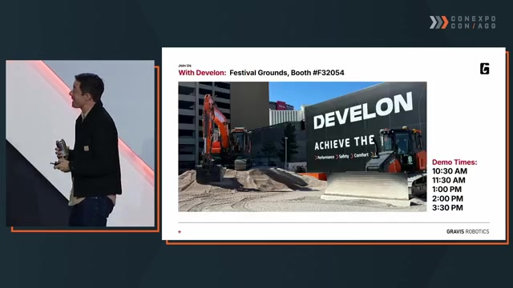
Source presentation · 41:07 The Next Era of Earthmoving: How Robotic Intelligence is Transforming Construction Productivity conexpoconagg · 2026년 3월 20일 게시 · YouTube에서 보기 ↗02 · Key findings
여섯 가지 핵심 발견
새 자율 장비 대신 기존 6~40톤급 장비를 개조해 브랜드와 현장 유형을 가로지른다.
토질, 하중, 유압 지연과 장비 편차에 실시간으로 적응해야 한다.
회전과 덤프 시간이 비슷하다면 한 사이클에 얼마나 많이 담는지가 처리량을 결정한다.
수천 대의 가상 장비로 토양과 유압 조건을 병렬 학습해 제어 정책을 일반화한다.
측량과 안전 보조부터 배치해 현장 데이터를 모으고 자율 기능을 점진적으로 개선한다.
완전 무인화보다 개입 빈도와 해결 시간을 낮춰 작업자의 관리 범위를 넓히는 것이 중요하다.
건설 자동화의 목표는 사람을 현장에서 지우는 것이 아니라, 사람의 판단이 가장 필요한 순간에 집중되도록 만드는 것이다.
03 · System architecture
센서에서 원격 개입까지, 하나의 폐쇄 루프
플랫폼은 주변을 감지하고, 현재 지형을 목표 설계면과 비교한 뒤, 장비를 제어하고 작업자에게 결과를 되돌려준다. 자동화가 실패하거나 특이 상황이 나타나면 같은 인터페이스에서 사람이 개입한다.
- 감지라이다·카메라·GPS·유압 압력으로 장비와 현장을 읽는다.
- 이해실시간 지형, 토양 저항, 목표 설계면과 장애물을 비교한다.
- 실행굴착·주행·적재 정책이 밸브와 전자유압 제어를 구동한다.
- 개입Slate에서 안내·감시·무선 정지·원격 조작을 수행한다.
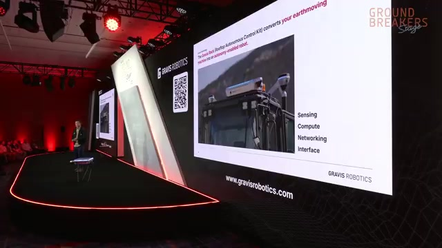
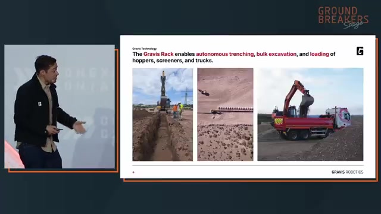
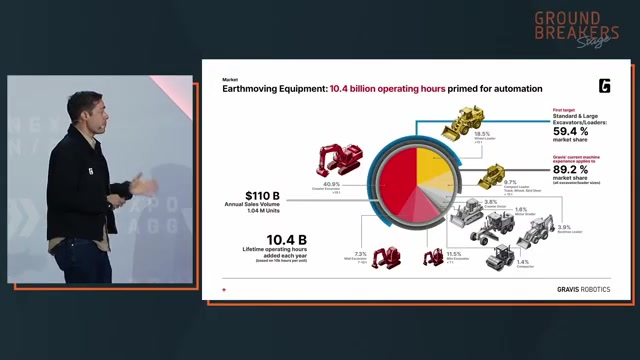
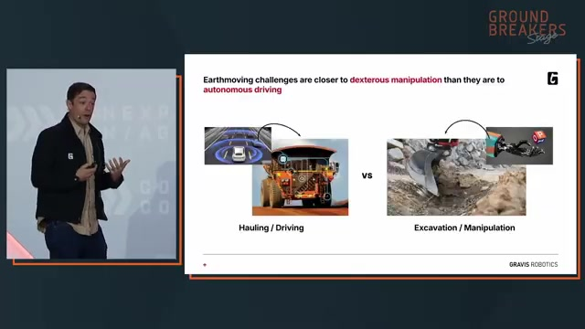
04 · From research to field robotics
돌을 쌓던 연구가 토공 플랫폼으로 이어지다
창업팀의 기술적 뿌리는 ETH Zurich와 DARPA Subterranean Challenge의 보행 로봇 연구에 있다. 복잡한 지형에서 균형을 잡는 문제는 23축 스파이더 굴착기의 이동과 유압 제어로 확장됐고, 다시 비정형 재료를 인식하고 배치하는 자율 시공 연구로 이어졌다.
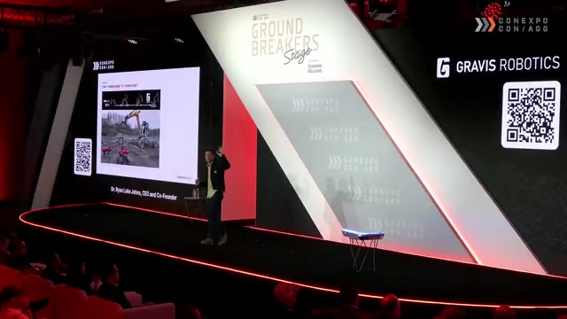
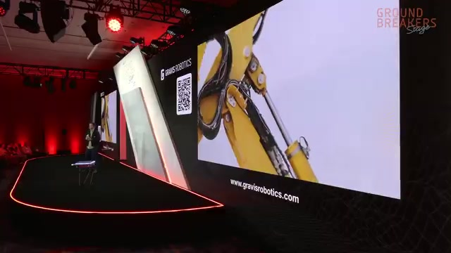
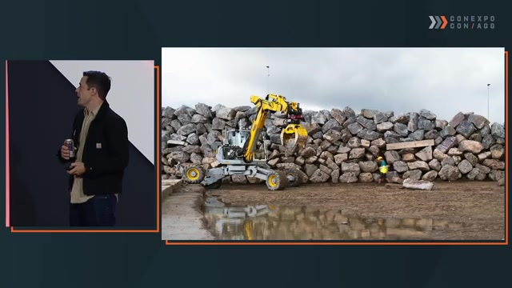
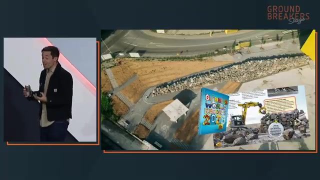
05 · Learning to dig
유압 장비는 왜 학습해야 하는가
같은 모델의 굴착기라도 온도, 마찰, 제조 공차와 마모 상태에 따라 반응이 다르다. 하나의 펌프를 공유하는 축들은 서로 영향을 주고, 버킷 하중과 토질은 매 순간 바뀐다. 미리 정한 궤적을 반복하는 방식만으로는 이런 차이를 흡수하기 어렵다.
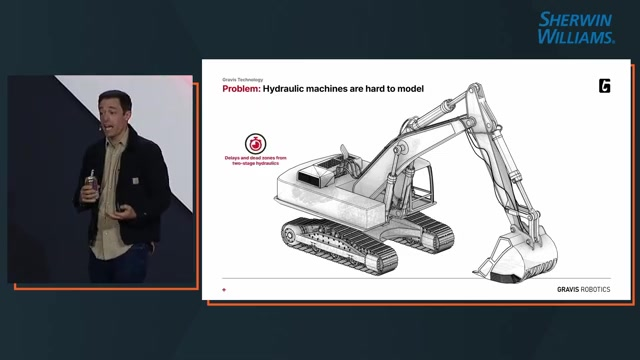
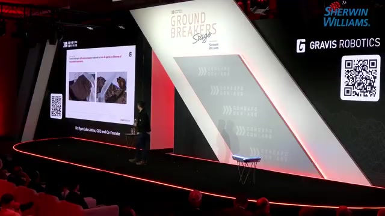
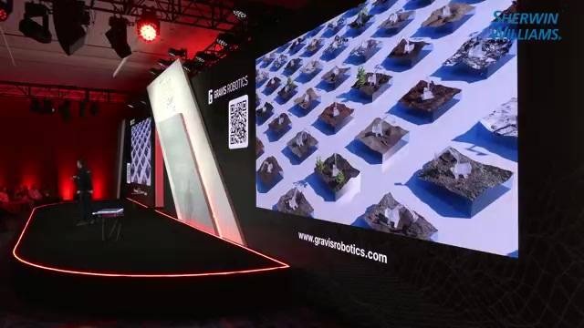
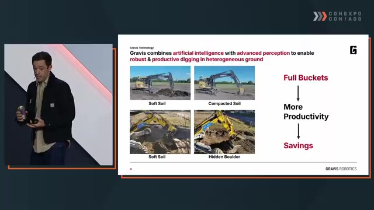
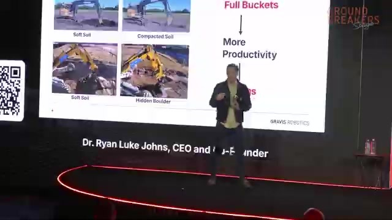
06 · Field evidence
현장 수치는 고무적이지만 아직 ‘주장’이다
발표는 여러 브랜드와 국가의 배치 사례를 제시한다. 일부 작업에서 사람 운전자 대비 약 30%의 생산성 증가가 관찰됐고, 한 채석장에서는 스크리너가 새로운 병목이 됐다고 설명한다. 그러나 비교 조건과 측정 방법이 충분히 공개되지 않아 결과의 일반화에는 주의가 필요하다.
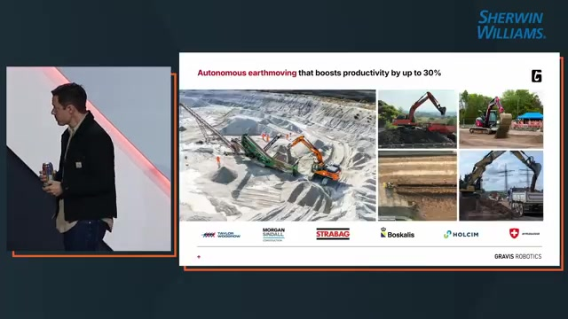
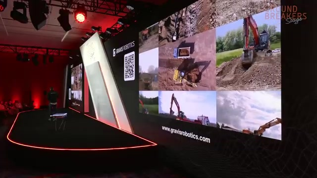
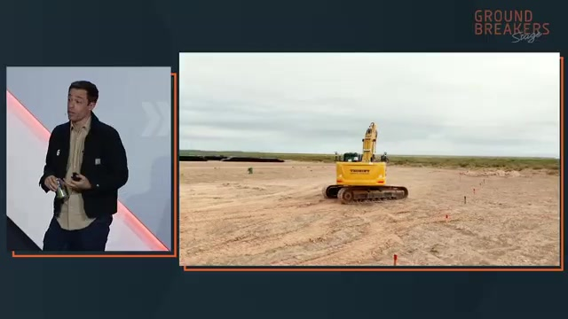
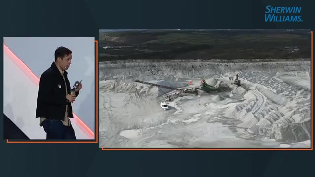
| 발표 지표 | 제시 수치 | 해석 시 주의점 |
|---|---|---|
| 굴착기·로더 판매 비중 | 약 90% | 발표자 산정 기준이며 외부 검증 자료가 제시되지 않았다. |
| 연간 신규 운전 역량 | 약 105억 시간 | 연 100만 대와 장비당 생애 1만 시간을 결합한 개념적 계산이다. |
| 석축 시공 투입 에너지 | 약 78% 감소 | 콘크리트 벽과의 비교 범위 및 전과정평가 조건이 불명확하다. |
| 일부 작업 생산성 | 약 30% 증가 | 토질, 작업, 비교 운전자와 측정 기간에 따라 결과가 달라질 수 있다. |
| 영국 채석장 목표 초과 | 33% | 스크리너 용량이 병목으로 이동한 개별 현장 사례다. |
| 장비 크기 축소 가능성 | 생산능력 15%당 1단계 | 표준화된 설계 규칙이 아니라 발표자가 제시한 운영 경험칙이다. |
07 · Human-centered deployment
작업자는 운전실에서 한 번에 사라지지 않는다
Gravis가 제시하는 도입 경로는 수동 운전과 완전 자율 사이를 여러 단계로 나눈다. 작업자는 먼저 실시간 측량과 안전 안내를 사용한다. 이후 장비 밖에서 자율 작업을 시작하고 감시하다가, 예외가 발생하면 원격 조작으로 개입한다.
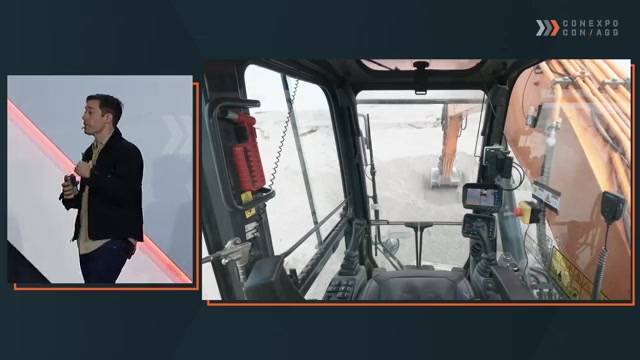
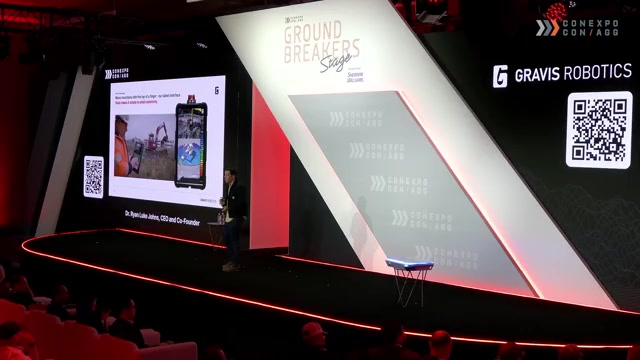
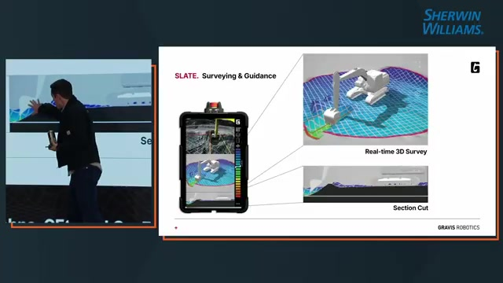
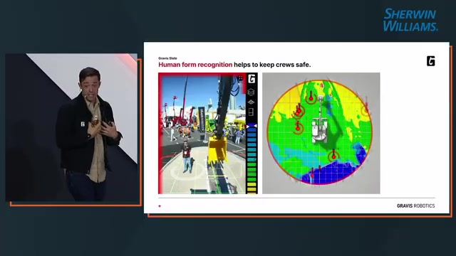
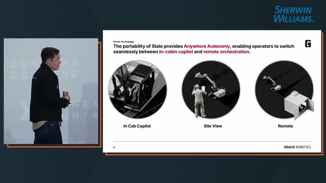
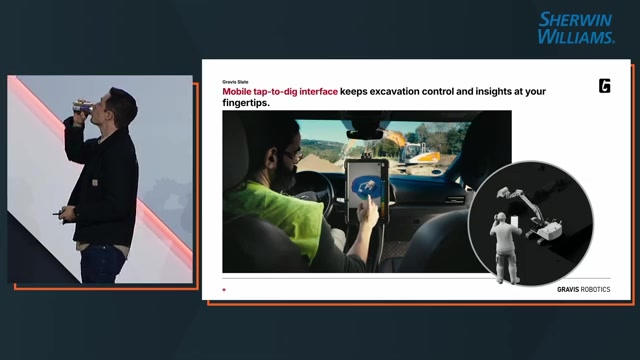
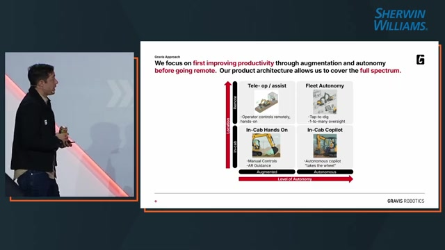
08 · Operating economics
MTBI와 MTTR: 다중 장비 운영을 결정하는 두 숫자
완전 자율 여부만으로 시스템의 경제성을 판단하기는 어렵다. 개입이 얼마나 자주 필요한지, 그리고 문제가 생겼을 때 사람이 얼마나 빨리 해결할 수 있는지를 분리해 측정해야 한다.
값이 길수록 장비가 중단 없이 작업하는 시간이 늘고 자율 처리량이 높아진다.
값이 짧을수록 작업자가 장비에서 멀리 떨어져도 빠르게 예외를 처리할 수 있다.
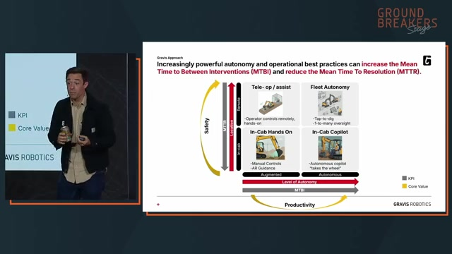
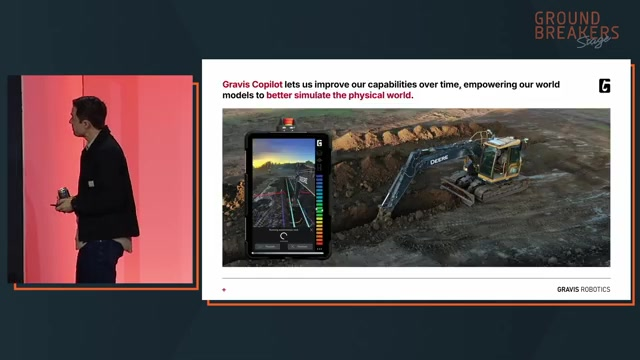
09 · Limits and implications
사람의 역할은 예외 처리로 이동한다
돌 제거, 손상된 배관 수리, 급유와 그리스 주입, 현장 관계자와의 조율에는 여전히 정교한 손기술과 상황 판단이 필요하다. 이 기술이 가까운 미래에 자동화하려는 것은 현장 전체가 아니라 단조롭고 반복적이거나 위험한 작업 구간이다.
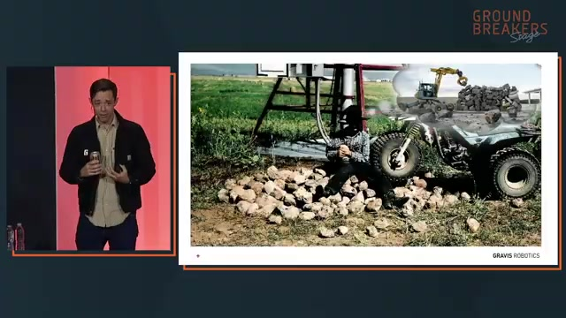
- 자동화의 최소 단위는 장비가 아니라 작업 흐름이다. 측량, 설계면 비교, 안전 인식, 적재 대상 탐지와 원격 예외 처리가 연결돼야 현장 생산성으로 이어진다.
- 범용성의 병목은 센서보다 제어 일반화다. 브랜드, 크기, 온도와 토질에 따른 유압 차이를 흡수하는 모델이 개조형 플랫폼의 성패를 좌우한다.
- Copilot은 초기 가치와 학습 데이터를 동시에 만든다. 보조 기능으로 먼저 현장에 들어가면 완전 자율이 어려운 작업의 데이터를 축적할 수 있다.
- 생산성 향상은 전체 시스템을 다시 설계하게 한다. 굴착 처리량이 오르면 스크리너, 트럭, 인력 배치와 정비 역량이 새로운 병목이 될 수 있다.
- 독립 벤치마크가 필요하다. 작업량 정의, 비교 운전자 숙련도, 토질, 가동률, 안전 정지, 연료와 유지비를 포함한 검증이 뒤따라야 한다.
10 · Conclusion
다음 시대의 토공은 ‘무인’보다 ‘확장’에 가깝다
Gravis Robotics의 비전은 자율 굴착기 한 대에 머물지 않는다. 자율 굴착, 장비 안내, 실시간 측량, 증강현실, 사람 인식과 원격 조작을 기존 장비 위에 하나의 운용 계층으로 올리려 한다.
이 전략이 설득력을 갖는 이유는 현장의 현실을 인정하기 때문이다. 모든 작업을 한 번에 자동화할 수 없고, 사람은 계속 예외를 해결해야 한다. 대신 장비가 반복 작업을 더 일정하게 수행하고 개입 빈도와 해결 시간을 낮춘다면, 한 명의 숙련자가 관리할 수 있는 장비와 현장의 수가 늘어난다.
관건은 화려한 자율 시연이 아니라 다양한 토질과 장비에서 생산성, 안전성, 개입 비용을 반복해서 증명하는 일이다.
Source notes
출처와 검증 메모
- 주요 출처: Ryan Luke Johns, “The Next Era of Earthmoving: How Robotic Intelligence is Transforming Construction Productivity,” conexpoconagg, 2026년 3월 20일 게시. 원래 스트리밍 일시 2026년 3월 4일 11:00 PT.
- 영상 주소: youtube.com/watch?v=E3iTlbmiUCM.
- 장면 해석은 영상 화면과 영어 자동 자막을 교차 확인했다. 작은 슬라이드 문자는 화면과 자막이 동시에 뒷받침하는 경우를 중심으로 사용했다.
- 90%, 105억 시간, 78%, 30%, 33% 및 생산능력 15%당 장비 한 단계 축소 가능성은 발표자가 제시한 값이다. 독립적인 학술 검토나 현장 원자료 검증을 거치지 않았다.
- 향후 검증에는 시간당 실제 처리량, 토질 분류, 기준 운전자 숙련도, 사이클 시간과 충전율, 연료 사용량, 안전 정지 횟수, MTBI·MTTR, 설치·정비 비용이 포함돼야 한다.